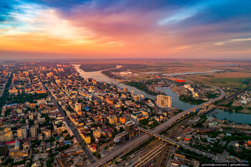
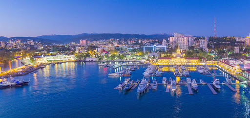
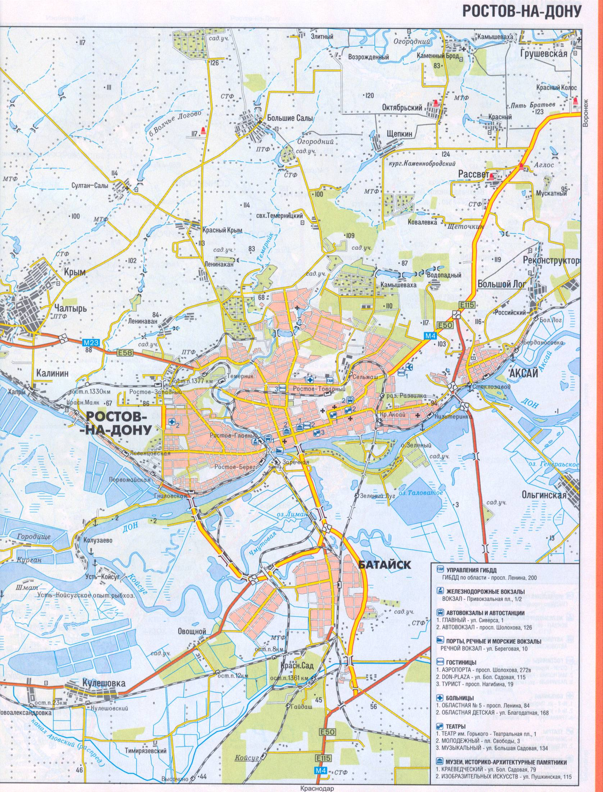

Ростов-на-Дону

Росто́в-на-Дону́ — крупнейший город на юго-западе России, административный центр Южного федерального округа и Ростовской области. Город воинской славы (2008).

Население — 1 133 307 человек (2019), это десятый по численности населения город России. В пределах Ростовской агломерации проживает свыше 2,16 млн человек (пятая по численности агломерация страны).
Город является крупным административным, экономическим, культурным, научно-образовательным, промышленным центром и важнейшим транспортным узлом Юга России. Неофициально Ростов именуют «Воротами Кавказа» и южной столицей России, а также донской столицей. Распространено понятие «Ростов-папа» наряду с не менее распространённым «Одесса-мама». Также, 21 февраля 2019 года Ростов-на-Дону был признан региональной столицей на законодательном уровне.

Основан по грамоте императрицы Елизаветы Петровны от 15 декабря 1749 года. Расположен на юго-востоке Восточно-Европейской равнины, на обоих берегах реки Дон в 46 км от места её впадения в Азовское море и в 380 км от Чёрного моря, в 1092 км к югу от Москвы.